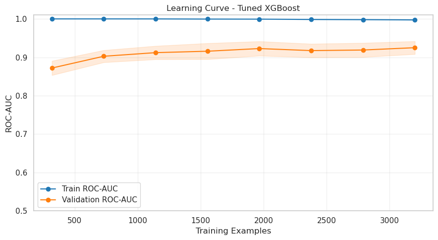

Can you predict when a customer is about to churn?
Acquiring a new customer is far more expensive than retaining one. This system helps you do exactly that by ranking the clients most at risk of churning.
I developed a complete supervised machine learning pipeline — from data preprocessing to model evaluation and interpretability — to predict churn with high precision and recall. The solution integrates classification modeling, business impact simulation, and explainability tools.
Precision‑first churn modeling with real‑world impact: up to 5.8× uplift in retention vs. random campaigns.
How It Works
Data Preprocessing
Cleaned & transformed 5K customer records (null resolution, type standardisation, leakage removal).
Class imbalance: churn only 14%. Used stratified splits & kept natural ratios (no naive oversampling) to preserve probability calibration.
Minority churn class at 14% handled through stratified splitting + calibrated thresholds.
Model Training & Evaluation
Benchmarked Logistic Regression, Random Forest & XGBoost on identical stratified folds (precision, recall, ROC‑AUC, F1).
XGBoost led consistently (ROC‑AUC 0.928, Precision 0.94, F1 0.848) while preserving recall.
XGBoost outperforms on ROC‑AUC & F1 with strong precision.
Validation metrics (identical stratified folds)
Metric
LogReg
RandomForest
XGBoost
Accuracy
0.8710
0.9560
0.9590
Precision
0.6304
0.9217
0.9167
Recall
0.2057
0.7518
0.7801
F1-score
0.3102
0.8281
0.8429
ROC-AUC
0.8257
0.9049
0.9215
Hyperparameter Tuning
Iterative tuning of tree depth, learning rate & regularisation (target: lift precision & AUC without harming recall).
Result: precision +0.023 with stable recall (‑0.007) and modest gains in AUC & F1.
Untuned vs Tuned XGBoost
Metric
Untuned
Tuned
Δ
Accuracy
0.9590
0.9610
+0.0020
Precision
0.9167
0.9397
+0.0230
Recall
0.7801
0.7730
-0.0071
F1-score
0.8429
0.8482
+0.0053
ROC-AUC
0.9215
0.9281
+0.0066
Overfitting
Three diagnostics run before locking the regularised production configuration.
Train vs Test Metrics – large drops on test indicate overfitting.
Pre‑regularisation: train vs test performance (high‑capacity tuned)
Metric
Train
Test
Gap
Accuracy
0.9802
0.9610
0.0192
Precision
0.9959
0.9397
0.0563
Recall
0.8640
0.7730
0.0909
F1
0.9253
0.8482
0.0770
ROC‑AUC
0.9956
0.9281
0.0675
Max absolute gap 0.0909 (Recall) → notable overfitting risk.
K‑Fold Cross Validation (5‑fold stratified) – instability surfaced via mean gaps.
Pre‑regularisation: train vs CV means
Metric
Train Mean
CV Mean
Gap Mean
ROC‑AUC
0.9974
0.9250
0.0724
Precision
0.9980
0.9308
0.0671
Recall
0.8710
0.7545
0.1165
Largest mean gap 0.1165 (Recall) → capacity reduction & regularisation required.
Learning Curve (ROC‑AUC) – widening stable gap (train near 1.0, validation lower & flat) confirms model capacity > signal.

Train 0.9974 vs Validation 0.9250 (gap 0.0724) prior to regularisation.
Consistent multi‑metric gaps (>0.05) – especially recall & ROC‑AUC – showed the model was partially memorising minority churn patterns; this motivated the regularisation applied in the next step.
International call frequency & charge (cost sensitivity)
Voicemail plan engagement (reduced stickiness when absent)
Feature importance (placeholder) – ranked drivers of predicted churn probability.
Strategic Recommendations
Repackage international plans for high‑risk segments.
Proactively engage customers with frequent support tickets.
Offer usage‑based plan customisation.
Deploy retention incentives for high international users.
Strengthen product stickiness via feature activation campaigns.
Business Impact (Targeted Outreach Simulation)
A simulation was conducted to compare the impact of targeting the top 500 high-risk customers ranked by the model, versus contacting 500 customers at random:
Scenario
Contacts
Actual Churners Reached
Estimated Saves (30%)
Retention Uplift
Random Targeting
500
~71
~21
1.0×
Model-Based Targeting
500
485
~145
5.8×
Churn reduction: ~20% projected reduction when targeting the top 500 customers with retention actions, compared to ~3% from random outreach.
Financial angle: Assuming a $240 annual margin per retained customer, this represents ~$10K protected ARR per 500-contact cycle.